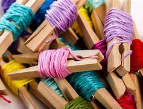

Bienvenidos a Avios Textiles K
En Avios Textiles K, somos tu aliado principal en la planificación de fábricas textiles. Ofrecemos una amplia gama de insumos que simplifican el proceso de fabricación, evitando la necesidad de recurrir a múltiples proveedores.
Nuestra misión es revolucionar la industria textil en Argentina, utilizando tecnología avanzada e innovación para ofrecer soluciones personalizadas y un servicio al cliente excepcional.
Explora nuestros productos y contáctanos para más información.
Productos Destacados del Mes





Reseñas
"Desde que comencé a trabajar con Avios Textiles K, mi experiencia ha sido excepcional. La variedad de insumos que ofrecen es impresionante y han simplificado nuestro proceso de producción. Su atención al cliente es inmejorable, siempre están dispuestos a ayudar y encontrar la mejor solución para nuestras necesidades. ¡Altamente recomendadas!"
- Laura Fernández, Dueña de Taller Textil Fernández.
- Laura Fernández, Dueña de Taller Textil Fernández.
"Como emprendedor en la industria textil, puedo decir que Avios Textiles K es una joya. Su amplia gama de insumos y productos de mercería nos ha permitido concentrarnos en nuestro crecimiento sin preocuparnos por la calidad de los materiales. Además, el equipo es muy profesional y siempre está dispuesto a ayudar. ¡Gracias, Avios!"
- Javier Martínez, Fundador de Moda Joven.
- Javier Martínez, Fundador de Moda Joven.
"La variedad de productos que ofrece Avios Textiles K es simplemente asombrosa. Desde etiquetas hasta envases, todo lo que necesitamos lo encontramos en un solo lugar. Esto ha hecho que nuestra planificación y logística sean mucho más sencillas. ¡No puedo imaginar trabajar sin ellos!"
- Ana Gómez, Gerente de Producción en Creativa S.A.
- Ana Gómez, Gerente de Producción en Creativa S.A.
"He trabajado con varios proveedores en el pasado, pero Avios Textiles K se destaca por la calidad de sus productos. Desde el primer pedido, la diferencia fue evidente. Su compromiso con la innovación y el servicio al cliente es admirable. Definitivamente seguiré confiando en ellos."
- Carlos Ruiz, CEO de Confecciones Ruiz.
- Carlos Ruiz, CEO de Confecciones Ruiz.
"Desde que comencé a trabajar con Avios Textiles, he notado una mejora significativa en la calidad de mis productos. Sus materiales son duraderos y tienen un acabado impecable. Además, el equipo siempre está dispuesto a ayudar y resolver cualquier duda. Sin duda, seguiré colaborando con ellos en el futuro."
- Mariana López, Propietaria de Boutique Chic.
- Mariana López, Propietaria de Boutique Chic.
"Avios Textiles ha sido un proveedor clave para mis proyectos. La variedad de avíos que ofrecen es impresionante, y la calidad es siempre consistente. Me encanta que están constantemente innovando y buscando nuevas soluciones para sus clientes. Definitivamente, son mi primera opción cuando necesito insumos textiles."
- Roberto Pérez, Director de Proyectos en Innovatextil.
- Roberto Pérez, Director de Proyectos en Innovatextil.
"La experiencia de compra con Avios Textiles ha sido excepcional. No solo ofrecen productos de alta calidad, sino que su atención al cliente es insuperable. Siempre están dispuestos a ayudarme a encontrar lo que busco y resolver cualquier problema rápidamente. Es un placer trabajar con ellos."
- Sofía Torres, Coordinadora de Compras en Estilo & Diseño.
- Sofía Torres, Coordinadora de Compras en Estilo & Diseño.